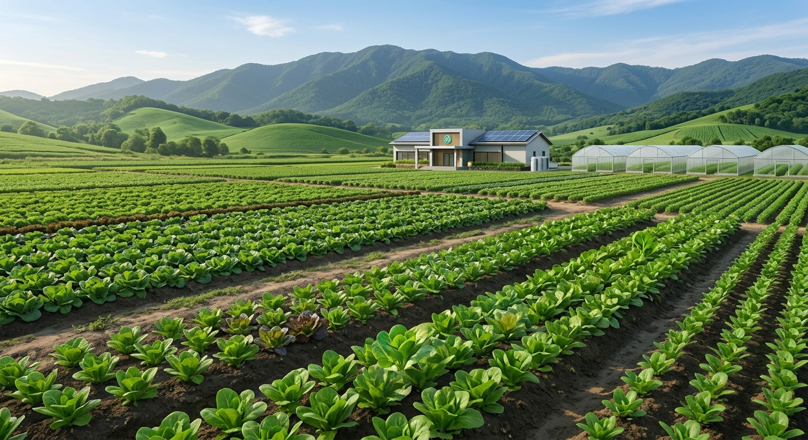
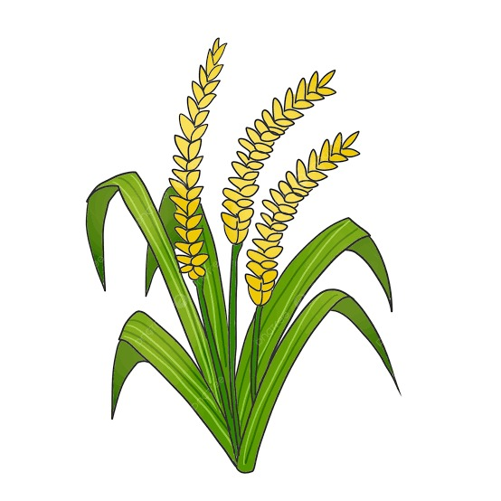
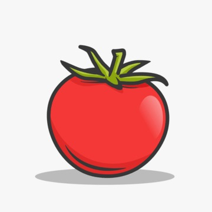
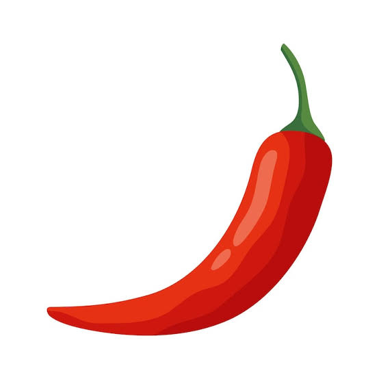

Kenali Tanaman dari Foto dengan AI
Optimalkan hasil panen Anda dengan deteksi penyakit tanaman secara instan menggunakan teknologi kecerdasan buatan. Unggah foto daun tanaman Anda dan dapatkan analisis kesehatan serta rekomendasi penanganan dalam hitungan detik.

Bagaimana AI Bekerja?
Hanya dengan tiga langkah mudah, Anda bisa mendiagnosis kondisi kesehatan tanaman Anda.
Upload Foto
Ambil atau unggah foto daun tanaman yang ingin diidentifikasi melalui perangkat Anda.
AI Menganalisis
Sistem AI kami akan mengekstrak fitur visual daun dan mencocokkannya dengan database penyakit tanaman.
Lihat Hasil
Dapatkan laporan kesehatan tanaman lengkap dengan rekomendasi pengobatan yang akurat.
Identifikasi Tanaman Sekarang
Unggah foto tanaman Anda (Padi, Tomat, atau Cabai) untuk memulai analisis.
Seret & Lepas Foto di Sini
atau klik untuk menelusuri file dari perangkat Anda
Format gambar: JPG, PNG (Maks. 5MB)Belum Ada Gambar yang Dianalisis
Unggah foto tanaman Anda di sisi kiri dan klik "Analisis Tanaman" untuk melihat diagnosis AI di sini.
Jenis Tanaman yang Dapat Dikenali
Sistem AI dilatih khusus untuk mengenali jenis tanaman pada 3 komoditas pertanian berikut.

Padi
Komoditas pangan utama. Sistem AI dapat mengenali tanaman padi dari citra visualnya.
Semai benih 15-25 hari, olah lahan sawah, lalu pindah tanam dengan jarak 20x20 cm sambil menjaga genangan air sesuai fase pertumbuhan.
110-130 hari setelah tanam, saat bulir menguning dan merunduk.

Tomat
Tanaman hortikultura yang umum dibudidayakan. Sistem AI dapat mengenali tanaman tomat dari citra visualnya.
Semai 3-4 minggu, pindah tanam ke lahan/polybag berjarak 50x60 cm, dan pasang ajir penyangga saat tanaman mulai tinggi.
70-90 hari setelah tanam, saat buah berubah dari hijau ke kuning/merah.

Cabai
Komoditas bernilai ekonomi tinggi. Sistem AI dapat mengenali tanaman cabai dari citra visualnya.
Semai 3-4 minggu, pindah tanam ke bedengan bermulsa berjarak 50x60 cm, siram dan pupuk susulan tiap 2 minggu.
75-90 hari setelah tanam, saat buah berwarna cerah dan mengkilap.
Mendukung Pertanian Berkelanjutan
PlantID lahir dari visi untuk menjembatani teknologi kecerdasan buatan (AI) dengan dunia pertanian tradisional. Kami percaya bahwa akses cepat terhadap identifikasi jenis tanaman dapat membantu edukasi dan kesejahteraan petani lokal.
Proyek klasifikasi citra ini dikembangkan menggunakan Teachable Machine dan terus disempurnakan agar cakupan jenis tanaman dan tingkat akurasi identifikasi semakin meningkat.